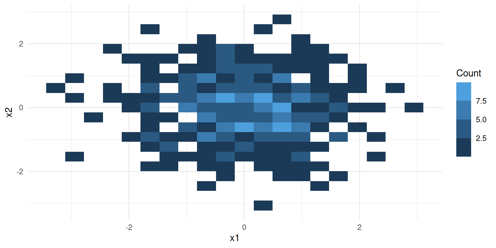
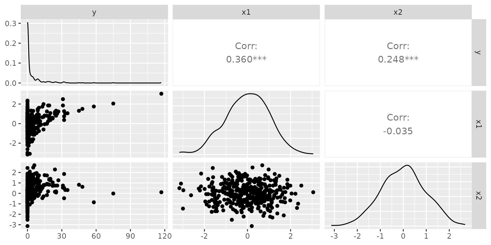
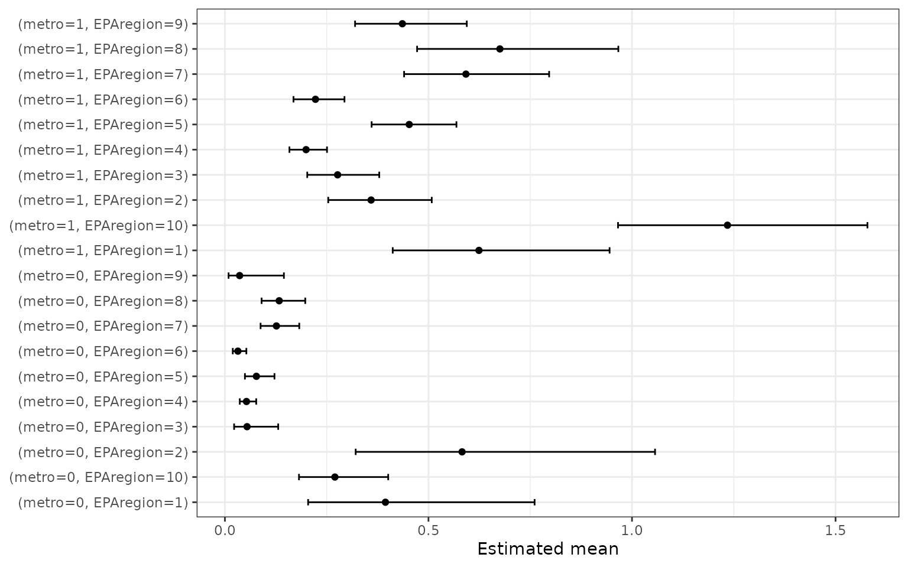
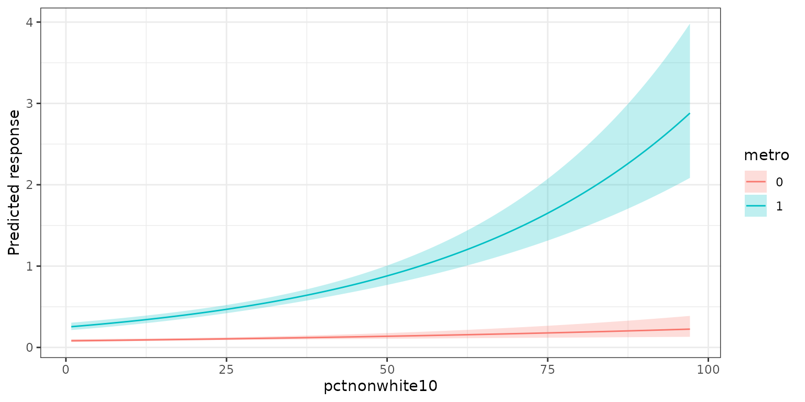
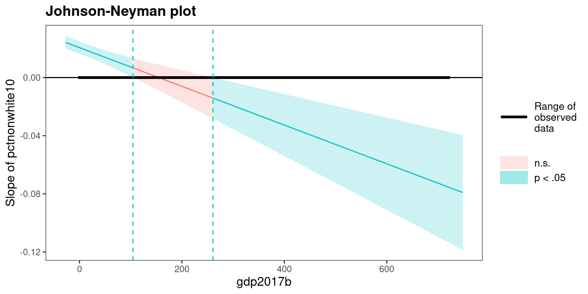

Overview
glmOJ provides a streamlined workflow for fitting,
diagnosing, and interpreting count regression models. The seven
supported families are:
| Function | Model |
|---|---|
poissonGLM() |
Poisson GLM |
quasiPoissonGLM() |
Quasi-Poisson GLM |
negbinGLM() |
Negative Binomial GLM |
tweedieGLM() |
Tweedie GLM |
zeroinflPoissonGLM() |
Zero-Inflated Poisson |
zeroinflNegbinGLM() |
Zero-Inflated Negative Binomial |
zeroinflTweedieGLM() |
Zero-Inflated Tweedie |
A general-purpose wrapper countGLM() fits the
likelihood-based families and selects the best by a user-chosen
criterion (decide): "BIC" (default),
"AIC", "LogLik", or "McFadden"
(McFadden pseudo-R²). Each zero-inflated counterpart (Poisson, Negative
Binomial, Tweedie) is fitted only when the DHARMa zero-inflation test
flags its base model (p < 0.05). A quasi-Poisson fit is additionally
produced when the Poisson fit shows a constant-overdispersion signature;
because quasi-likelihood has no proper likelihood, it is reported
alongside but excluded from the AIC/BIC/McFadden comparison.
Case Study: Federal Environmental Crime Prosecutions
Greenberg et al. (2026) investigate how environmental and social
factors influence where EPA criminal prosecutions occur across 3,143 US
counties (2011–2020). The response variable FinalEC is a
count of criminal prosecutions per county.
data("Greenberg26.dat")1. Data Exploration
Before fitting, summarizeCountData() gives a quick
numerical and graphical overview of the count response alongside each
predictor.
summarizeCountData(
FinalEC ~ eqi_2jan2018_vc +
pctnonwhite10 +
metro +
gdp2017b +
fac_penalty_count +
CIDDist +
EPAregion,
data = Greenberg26.dat
)
#> $summary
#> mean var var_mean_ratio n_zero prop_zero n_total
#> 1 0.2356564 0.6490525 2.754232 2654 0.8602917 3085
#>
#> $counts
#> count freq
#> 1 0 2654
#> 2 1 299
#> 3 2 66
#> 4 3 31
#> 5 4 14
#> 6 5 5
#> 7 6 6
#> 8 7 3
#> 9 8 3
#> 10 9 2
#> 11 11 1
#> 12 12 1
#>
#> $plot
#>
#> $pairs_plot
2. Poisson Regression
We first fit a Poisson GLM with the Overall Environmental Quality Index and demographic/geographic controls.
mod.pois <- poissonGLM(
FinalEC ~ eqi_2jan2018_vc +
pctnonwhite10 +
metro +
gdp2017b +
fac_penalty_count +
CIDDist +
EPAregion,
data = Greenberg26.dat
)Coefficients (exponentiated)
mod.pois$coefficients
#> term exp.coef lower.95 upper.95 p.value stars
#> 1 (Intercept) 0.1823719 0.1218639 0.2729236 1.304191e-16 ***
#> 2 eqi_2jan2018_vc 1.0587100 0.9554459 1.1731349 2.759131e-01
#> 3 pctnonwhite10 1.0193442 1.0149745 1.0237327 2.308798e-18 ***
#> 4 metro1 3.3042257 2.7087270 4.0306415 4.500518e-32 ***
#> 5 gdp2017b 1.0020768 1.0013743 1.0027798 6.708917e-09 ***
#> 6 fac_penalty_count 1.0035038 1.0025814 1.0044270 9.019065e-14 ***
#> 7 CIDDist 0.9968844 0.9961277 0.9976416 7.995795e-16 ***
#> 8 EPAregion2 0.6380126 0.4071818 0.9997010 4.984764e-02 *
#> 9 EPAregion3 0.3930124 0.2500571 0.6176939 5.159508e-05 ***
#> 10 EPAregion4 0.3419217 0.2283596 0.5119578 1.880591e-07 ***
#> 11 EPAregion5 0.6331705 0.4259880 0.9411178 2.381632e-02 *
#> 12 EPAregion6 0.3535927 0.2288448 0.5463433 2.826577e-06 ***
#> 13 EPAregion7 0.9194406 0.6000503 1.4088336 6.996862e-01
#> 14 EPAregion8 0.9845458 0.6244062 1.5524036 9.465543e-01
#> 15 EPAregion9 0.6802879 0.4344711 1.0651838 9.219375e-02 .
#> 16 EPAregion10 1.6355984 1.0812709 2.4741092 1.980635e-02 *Model fit
mod.pois$diagnostics$plot
The dispersion ratio of 1.615 is flagged in red — the observed variance is ~60% larger than expected under Poisson, suggesting overdispersion. We also inspect the squared Pearson residual plot:
mod.pois$diagnostics$r2_plot
The wedge shape confirms the mean-variance relationship is not well captured by the Poisson assumption.
3. Negative Binomial Regression
The negative binomial adds a free dispersion parameter to handle overdispersion.
mod.nb <- negbinGLM(
FinalEC ~ eqi_2jan2018_vc +
pctnonwhite10 +
metro +
gdp2017b +
fac_penalty_count +
CIDDist +
EPAregion,
data = Greenberg26.dat,
control = stats::glm.control(maxit = 100)
)Coefficients (exponentiated)
mod.nb$coefficients
#> term exp.coef lower.95 upper.95 p.value stars
#> 1 (Intercept) 0.1739476 0.1009294 0.2997917 3.023453e-10 ***
#> 2 eqi_2jan2018_vc 0.9876521 0.8594207 1.1350166 8.609982e-01
#> 3 pctnonwhite10 1.0142370 1.0081961 1.0203142 3.518093e-06 ***
#> 4 metro1 2.6619963 2.0970839 3.3790847 8.626855e-16 ***
#> 5 gdp2017b 1.0075352 1.0053273 1.0097479 1.988481e-11 ***
#> 6 fac_penalty_count 1.0095626 1.0068424 1.0122902 4.726959e-12 ***
#> 7 CIDDist 0.9980886 0.9971817 0.9989964 3.709074e-05 ***
#> 8 EPAregion2 0.7248601 0.3804835 1.3809327 3.278330e-01
#> 9 EPAregion3 0.3342143 0.1793891 0.6226643 5.559635e-04 ***
#> 10 EPAregion4 0.3282850 0.1881526 0.5727855 8.778317e-05 ***
#> 11 EPAregion5 0.5182600 0.2972138 0.9037044 2.051048e-02 *
#> 12 EPAregion6 0.3174128 0.1737298 0.5799287 1.901195e-04 ***
#> 13 EPAregion7 0.7815558 0.4357070 1.4019271 4.083921e-01
#> 14 EPAregion8 0.9084431 0.4852015 1.7008789 7.641150e-01
#> 15 EPAregion9 0.5513771 0.2775557 1.0953358 8.914123e-02 .
#> 16 EPAregion10 1.6502074 0.8996619 3.0268976 1.055884e-01

4. Using the countGLM Wrapper
Rather than fitting each model manually, countGLM() fits
the full family of count models at once and selects the best by the
criterion specified in decide (default "BIC")
— arriving at the same conclusion automatically.
Overall EQI formula
result1 <- countGLM(
FinalEC ~ eqi_2jan2018_vc +
pctnonwhite10 +
metro +
gdp2017b +
fac_penalty_count +
CIDDist +
EPAregion,
data = Greenberg26.dat
)
print(result1)
#>
#> Call:
#> countGLM(formula = FinalEC ~ eqi_2jan2018_vc + pctnonwhite10 +
#> metro + gdp2017b + fac_penalty_count + CIDDist + EPAregion,
#> data = Greenberg26.dat)
#>
#> Model comparison (sorted by BIC (ascending)):
#> model AIC BIC
#> negbin 2964.32 3066.90
#> zeroinfl_poisson 2920.58 3113.67
#> poisson 3179.45 3276.00
#>
#> Selected model: negbin
#>
#> Recommendation:
#> Negative Binomial was selected by BIC (BIC = 3066.90). The Poisson
#> dispersion ratio is 1.62 (> 1.2), indicating overdispersion.
#> Zero-inflation detected for Poisson; corresponding ZI model(s) were
#> fitted.The wrapper selects the same winner as the manual LRT. Individual
fits remain accessible: result1$fits$negbin,
result1$fits$poisson, etc.
Sub-index formula
The researchers also evaluated whether separate Water, Air, Land, and
Socioeconomic indices were more informative than the composite Overall
EQI. countGLM handles this in one call:
result2 <- countGLM(
FinalEC ~ water_eqi_2jan2018_vc +
land_eqi_2jan2018_vc +
air_eqi_2jan2018_vc +
sociod_eqi_2jan2018_vc +
pctnonwhite10 +
metro +
gdp2017b +
fac_penalty_count +
CIDDist +
EPAregion,
data = Greenberg26.dat
)
print(result2)
#>
#> Call:
#> countGLM(formula = FinalEC ~ water_eqi_2jan2018_vc + land_eqi_2jan2018_vc +
#> air_eqi_2jan2018_vc + sociod_eqi_2jan2018_vc + pctnonwhite10 +
#> metro + gdp2017b + fac_penalty_count + CIDDist + EPAregion,
#> data = Greenberg26.dat)
#>
#> Model comparison (sorted by BIC (ascending)):
#> model AIC BIC
#> negbin 2953.72 3074.41
#> zeroinfl_poisson 2933.58 3162.89
#> poisson 3144.98 3259.64
#>
#> Selected model: negbin
#>
#> Recommendation:
#> Negative Binomial was selected by BIC (BIC = 3074.41). The Poisson
#> dispersion ratio is 1.49 (> 1.2), indicating overdispersion.
#> Zero-inflation detected for Poisson; corresponding ZI model(s) were
#> fitted.Again the negative binomial is selected. The non-nested comparison
between these two winning models (overall EQI vs sub-indices) can be
done with a Vuong test via
nonnest2::vuongtest(result1$fits$negbin$model, result2$fits$negbin$model).
5. Coefficient Interpretation
interpret_coef() translates any exponentiated
coefficient into a plain-language statement, with a 95% CI and an
automatic note when the predictor is not discernible from zero (p >
0.05).
Significant predictor
interpret_coef(mod.nb, "pctnonwhite10")
#> Holding all other predictors constant, a one-unit increase in pctnonwhite10 is associated with a 1.4% increase in the expected count of FinalEC (exp(β) = 1.014, 95% CI: [1.008, 1.020]).Non-significant predictor
interpret_coef(mod.nb, "eqi_2jan2018_vc")
#> Holding all other predictors constant, a one-unit increase in eqi_2jan2018_vc is associated with a 1.2% decrease in the expected count of FinalEC (exp(β) = 0.988, 95% CI: [0.859, 1.135]).
#> Note: this coefficient is not discernibly different from zero (p = 0.861).The note about discernibility is added automatically.
Using with countGLM
Pass the countGLM result directly — it delegates to the
best-fitting model:
interpret_coef(result2, "pctnonwhite10")
#> Holding all other predictors constant, a one-unit increase in pctnonwhite10 is associated with a 1.4% increase in the expected count of FinalEC (exp(β) = 1.014, 95% CI: [1.008, 1.020]).Zero-inflated models: specifying the component
For zero-inflated models, use component = "count"
(default) or component = "zero":
interpret_coef(zi_fit, "pctnonwhite10", component = "count")
interpret_coef(zi_fit, "pctnonwhite10", component = "zero")Case Study 2: Urban Surveillance Camera Counts (Dahir 2025)
Dahir (2025) models the number of surveillance cameras per census
tract across ten US cities. The response cam_count is a
non-negative integer with 87.6% zeros and a variance-to-mean ratio of
approximately 3.6, a warning sign that a standard Poisson model may fit
poorly.
data("Dahir25.dat")6. Data Exploration
summarizeCountData(
cam_count ~ total_crime_rate + hinc + modal_zone + pvac,
data = Dahir25.dat
)
#> $summary
#> mean var var_mean_ratio n_zero prop_zero n_total
#> 1 0.2172117 0.7840397 3.609565 10177 0.8758176 11620
#>
#> $counts
#> count freq
#> 1 0 10177
#> 2 1 977
#> 3 2 257
#> 4 3 97
#> 5 4 44
#> 6 5 20
#> 7 6 14
#> 8 7 8
#> 9 8 4
#> 10 9 5
#> 11 10 5
#> 12 11 2
#> 13 13 3
#> 14 15 1
#> 15 17 1
#> 16 19 1
#> 17 21 2
#> 18 22 1
#> 19 23 1
#>
#> $plot
#>
#> $pairs_plot
Camera placement varies substantially by land-use zone — mixed and industrial tracts have cameras in roughly 28–42% of cases, while residential tracts (the majority, n = 8913) have cameras in fewer than 10%. This mixture of structurally camera-free tracts alongside genuinely high-count commercial zones is exactly the setting where zero-inflated or overdispersed count models are needed.
7. Poisson and Zero-Inflated Poisson
We may want to start by manually fitting a Poisson model to confirm the overdispersion and zero-inflation intuition. The formula includes a quadratic term for each predictor to allow for non-linear effects, and road length is included as an offset:
pois.cam <- poissonGLM(
cam_count ~ pnhwht +
pnhblk +
entropy_rank +
total_crime_rate +
modal_zone +
pop +
hinc +
pvac +
mhmval +
city +
offset(log_road_length) +
I(pnhwht^2) +
I(pnhblk^2) +
I(entropy_rank^2),
data = Dahir25.dat
)
#> Warning: Possible zero-inflation detected by DHARMa test (p = 0.000). Consider
#> zeroinflPoissonGLM(), zeroinflNegbinGLM(), or zeroinflTweedieGLM().
print(pois.cam)
#>
#> Call:
#> poissonGLM(formula = cam_count ~ pnhwht + pnhblk + entropy_rank +
#> total_crime_rate + modal_zone + pop + hinc + pvac + mhmval +
#> city + offset(log_road_length) + I(pnhwht^2) + I(pnhblk^2) +
#> I(entropy_rank^2), data = Dahir25.dat)
#>
#> Model family: poissonGLM
#>
#> Coefficients (on response scale):
#> term exp.coef lower.95 upper.95 p.value stars
#> (Intercept) 0.1337 0.1055 0.1695 0.0000 ***
#> pnhwht 0.9634 0.8968 1.0349 0.3067
#> pnhblk 0.8723 0.8106 0.9387 0.0003 ***
#> entropy_rank 1.4478 0.7754 2.7031 0.2454
#> total_crime_rate 1.0908 1.0796 1.1022 0.0000 ***
#> modal_zoneindustrial 1.1534 0.9558 1.3917 0.1366
#> modal_zonemixed 1.2535 1.0415 1.5087 0.0168 *
#> modal_zonepublic 0.5876 0.4649 0.7428 0.0000 ***
#> modal_zoneresidential 0.4298 0.3742 0.4937 0.0000 ***
#> modal_zoneroads 0.6960 0.4447 1.0895 0.1130
#> pop 1.1213 1.0990 1.1442 0.0000 ***
#> hinc 0.7716 0.7305 0.8149 0.0000 ***
#> pvac 1.1807 1.1373 1.2258 0.0000 ***
#> mhmval 1.1586 1.1036 1.2164 0.0000 ***
#> cityBoston 1.2368 1.0563 1.4481 0.0083 **
#> cityChicago 0.1851 0.1546 0.2216 0.0000 ***
#> cityLos Angeles 0.0495 0.0399 0.0615 0.0000 ***
#> cityMilwaukee 0.3249 0.2688 0.3927 0.0000 ***
#> cityNew York 0.2073 0.1776 0.2421 0.0000 ***
#> cityPhiladelphia 0.4482 0.3808 0.5274 0.0000 ***
#> citySan Francisco 0.6071 0.5090 0.7241 0.0000 ***
#> citySeattle 0.1768 0.1440 0.2171 0.0000 ***
#> cityWashington 0.4568 0.3008 0.6937 0.0002 ***
#> I(pnhwht^2) 1.0487 0.9979 1.1020 0.0607 .
#> I(pnhblk^2) 1.0139 0.9881 1.0402 0.2939
#> I(entropy_rank^2) 1.2363 0.7094 2.1546 0.4541
#>
#> Dispersion ratio: 1.8401
#> AIC: 11299.96The DHARMa zero-inflation test result:
zi <- pois.cam$diagnostics$zi_test
cat(sprintf(
"DHARMa zero-inflation test: p = %.4f | Detected: %s\n",
zi$p_value,
zi$detected
))
#> DHARMa zero-inflation test: p = 0.0000 | Detected: TRUE
zi$plot
8. Automatic Model Selection with countGLM
countGLM() fits the full family of count models and
selects the best by the criterion in decide (default
"BIC"). Road length (log_road_length) is
included as an offset in the count component; because
ziformula = NULL, it is automatically applied to the
zero-inflation component as well — countGLM prints a note
confirming this:
result_cam <- countGLM(
cam_count ~ pnhblk +
pnhwht +
total_crime_rate +
hinc +
pvac +
modal_zone +
offset(log_road_length),
data = Dahir25.dat
)
print(result_cam)
#>
#> Call:
#> countGLM(formula = cam_count ~ pnhblk + pnhwht + total_crime_rate +
#> hinc + pvac + modal_zone + offset(log_road_length), data = Dahir25.dat)
#>
#> Model comparison (sorted by BIC (ascending)):
#> model AIC BIC
#> negbin 11306.16 11394.49
#> tweedie 11493.07 11588.75
#> zeroinfl_poisson 11791.50 11953.43
#> poisson 13201.10 13282.07
#>
#> Selected model: negbin
#>
#> Recommendation:
#> Negative Binomial was selected by BIC (BIC = 11394.49). The Poisson
#> dispersion ratio is 2.42 (> 1.2), indicating overdispersion.
#> Zero-inflation detected for Poisson and Tweedie; corresponding ZI
#> model(s) were fitted.The comparison table shows AIC and BIC for each fitted family, sorted by the selection criterion. The selected model is negbin. The recommendation captures the relevant dispersion and zero-inflation diagnostics automatically, explaining why this family was preferred.
9. Checking for Multicollinearity (VIF)
All four model families share the assumption that predictors are not
strongly collinear. countGLM() automatically computes
Variance Inflation Factors and stores them in $vif. To
avoid false positives from structural collinearity — which is
expected whenever interaction or polynomial terms are present — VIF is
computed on an OLS model that retains only the order-1 (main-effect)
terms from the formula. Offset terms are excluded as well.
result_cam$vif
#> term GVIF Df GVIF^(1/(2*Df))
#> pnhblk pnhblk 1.696259 1 1.302405
#> pnhwht pnhwht 2.292616 1 1.514139
#> total_crime_rate total_crime_rate 1.152382 1 1.073490
#> hinc hinc 1.592488 1 1.261938
#> pvac pvac 1.093179 1 1.045552
#> modal_zone modal_zone 1.040710 5 1.003998VIF = 1 means a predictor is uncorrelated with all others; values up to ~5 are generally acceptable. Any VIF > 5 triggers a warning. Here all predictors are well below that threshold, confirming that multicollinearity is not a concern for this model.
To illustrate the interaction-term handling, fitting the Poisson model with a quadratic term does not inflate the VIF for the underlying predictors:
result_quad <- suppressWarnings(countGLM(
cam_count ~ pnhblk +
pnhwht +
total_crime_rate +
I(total_crime_rate^2) +
offset(log_road_length),
data = Dahir25.dat
))
result_quad$vif # only main-effect terms: pnhblk, pnhwht, total_crime_rate
#> term GVIF Df GVIF^(1/(2*Df))
#> pnhblk pnhblk 1.683595 1 1.297534
#> pnhwht pnhwht 1.637775 1 1.279756
#> total_crime_rate total_crime_rate 1.726555 1 1.313984
#> I(total_crime_rate^2) I(total_crime_rate^2) 1.648745 1 1.28403510. Interpreting the Winning Model
interpret_coef() delegates to the best-fitting model
automatically:
interpret_coef(result_cam, "total_crime_rate")
#> Holding all other predictors constant, a one-unit increase in total_crime_rate is associated with a 39.2% increase in the expected rate of cam_count per unit of exposure (exp(β) = 1.392, 95% CI: [1.333, 1.455]).
interpret_coef(result_cam, "hinc")
#> Holding all other predictors constant, a one-unit increase in hinc is associated with a 19.5% decrease in the expected rate of cam_count per unit of exposure (exp(β) = 0.805, 95% CI: [0.744, 0.871]).For zero-inflated models, the count and zero components can be interpreted separately. The count component describes the expected camera count among tracts that are in the counting process; the zero component describes the odds of being a structural zero (a tract that never receives a camera):
interpret_coef(result_cam, "total_crime_rate", component = "count")
interpret_coef(result_cam, "total_crime_rate", component = "zero")Case Study 3: Zero-Inflated Tweedie (Simulated Count Data)
The ZITweedie.dat dataset illustrates when
zeroinflTweedieGLM() is the appropriate model. The response
y is a non-negative integer count simulated from a compound
Poisson-Gamma (Tweedie,
,
)
with structural zeros added on top. The true model has two independent
predictors: x1 drives the count mean and x2
drives zero-inflation.
data("ZITweedie.dat")11. Data Exploration
summarizeCountData(y ~ x1 + x2, data = ZITweedie.dat)
#> $summary
#> mean var var_mean_ratio n_zero prop_zero n_total
#> 1 4.13 105.2011 25.47242 244 0.61 400
#>
#> $counts
#> count freq
#> 1 0 244
#> 2 1 18
#> 3 2 19
#> 4 3 15
#> 5 4 12
#> 6 5 14
#> 7 6 6
#> 8 7 4
#> 9 8 7
#> 10 9 10
#> 11 10 6
#> 12 11 4
#> 13 12 1
#> 14 13 2
#> 15 14 3
#> 16 15 2
#> 17 17 4
#> 18 18 2
#> 19 19 3
#> 20 20 3
#> 21 22 2
#> 22 24 3
#> 23 25 2
#> 24 26 1
#> 25 27 1
#> 26 31 2
#> 27 32 3
#> 28 33 1
#> 29 35 1
#> 30 45 1
#> 31 48 1
#> 32 58 1
#> 33 75 1
#> 34 117 1
#>
#> $plot
#>
#> $pairs_plot
The frequency table is dominated by zeros (~57%), and the variance far exceeds the mean — both signs that a standard Poisson or negative binomial model will fit poorly.
12. Automatic Model Selection with countGLM
countGLM() fits the three base families and then fits
each zero-inflated counterpart only when the DHARMa zero-inflation test
flags its base model (p < 0.05). AIC/BIC then arbitrates among
whichever models were fit.
result_zitw <- suppressWarnings(
countGLM(y ~ x1 + x2, data = ZITweedie.dat)
)
print(result_zitw)
#>
#> Call:
#> countGLM(formula = y ~ x1 + x2, data = ZITweedie.dat)
#>
#> Model comparison (sorted by BIC (ascending)):
#> model AIC BIC
#> tweedie 1433.70 1453.66
#> negbin 1462.02 1477.98
#> zeroinfl_poisson 1649.58 1673.53
#> poisson 3393.04 3405.02
#>
#> Selected model: tweedie
#>
#> Recommendation:
#> Tweedie was selected by BIC (BIC = 1453.66). The Poisson dispersion
#> ratio is 8.97 (> 1.2), indicating overdispersion. Zero-inflation
#> detected for Poisson; corresponding ZI model(s) were fitted.13. Fitting Zero-Inflated Tweedie Directly
zeroinflTweedieGLM() can also be called directly, which
is useful when the ZI predictor differs from the count predictor. Here
the true ZI predictor is x2, so we supply it via
ziformula:
fit_zitw <- suppressWarnings(
zeroinflTweedieGLM(y ~ x1, data = ZITweedie.dat, ziformula = ~x2)
)
print(fit_zitw)
#>
#> Call:
#> zeroinflTweedieGLM(formula = y ~ x1, data = ZITweedie.dat, ziformula = ~x2)
#>
#> Model family: zeroinflTweedieGLM
#>
#> Count component (exponentiated coefficients):
#> term exp.coef lower.95 upper.95 p.value stars
#> (Intercept) 6.3374 5.4737 7.3373 0 ***
#> x1 2.4419 2.1786 2.7369 0 ***
#>
#> Zero-inflation component (exponentiated coefficients):
#> term exp.coef lower.95 upper.95 p.value stars
#> (Intercept) 1.3416 0.9467 1.9010 0.0985 .
#> x2 0.0904 0.0485 0.1682 0.0000 ***
#>
#> Dispersion (phi): 2.4293
#> Power (p): 1.3366
#> Dispersion ratio: 0.8916
#> AIC: 1305.5714. Interpreting Both Components
The count component describes the expected count among observations that are not structural zeros; the zero component describes the odds of being a structural zero.
interpret_coef(fit_zitw, "x1", component = "count")
#> Holding all other predictors constant, a one-unit increase in x1 is associated with a 144.2% increase in the expected value of y (among non-structural zeros) (exp(β) = 2.442, 95% CI: [2.179, 2.737]).
interpret_coef(fit_zitw, "x2", component = "zero")
#> Holding all other predictors constant, a one-unit increase in x2 is associated with a 91.0% decrease in the odds of being a structural zero (exp(β) = 0.090, 95% CI: [0.049, 0.168]).The estimated (1.337) is well within (1, 2), confirming the Tweedie family is appropriate. The estimated is 2.429.
Untangling Interactions
A single coefficient is not enough to describe an interaction: the
effect of one predictor depends on the value of another.
untangle_interaction() produces the right post-hoc summary
for each case — categorical × categorical, categorical × continuous, or
continuous × continuous — in one call. It accepts any model fit returned
by the package (or a raw glm / glmmTMB object)
and a pair of interacting variables.
By default the function does not average over any
categorical predictor outside the interaction of interest; each
level is reported separately. Continuous controls are held at their mean
(the emmeans default). Pass names to
average.over to collapse specific categorical
predictors.
We return to the Greenberg environmental-crime data and fit three variants of the Poisson model, each with a different interaction, to illustrate the three cases.
15. Categorical × Categorical: metro * EPAregion
Does the metro/non-metro contrast look the same across EPA regions?
fit_cc <- poissonGLM(
FinalEC ~ metro * EPAregion + eqi_2jan2018_vc + pctnonwhite10 + gdp2017b,
data = Greenberg26.dat
)
res_cc <- untangle_interaction(fit_cc, c("metro", "EPAregion"))
#> Interaction metro x EPAregion (categorical x categorical).
#> 'emmeans' holds estimated marginal means for every combination of the two factors. Columns: Mean = EMM on the response scale, Lower/Upper = 95% confidence bounds. 'plot' contains a faceted ggplot of the means with 95% error bars.
head(res_cc$emmeans, 10)
#> metro EPAregion Mean SE df Lower Upper
#> 0 1 0.3943082 0.13219689 Inf 0.2043899 0.7606976
#> 1 1 0.6240832 0.13208135 Inf 0.4121865 0.9449119
#> 0 2 0.5825585 0.17697119 Inf 0.3211880 1.0566225
#> 1 2 0.3590851 0.06358512 Inf 0.2537877 0.5080707
#> 0 3 0.0543746 0.02437263 Inf 0.0225869 0.1308985
#> 1 3 0.2768718 0.04438896 Inf 0.2022141 0.3790933
#> 0 4 0.0529480 0.01006407 Inf 0.0364802 0.0768496
#> 1 4 0.1993390 0.02332805 Inf 0.1584815 0.2507297
#> 0 5 0.0773253 0.01789516 Inf 0.0491282 0.1217062
#> 1 5 0.4527369 0.05269071 Inf 0.3603967 0.5687363
#>
#> Confidence level used: 0.95
#> Intervals are back-transformed from the log scaleMean is the estimated marginal mean on the response
scale (expected count per county); Lower/Upper
are 95% confidence bounds. Comparing Mean across
metro within each EPAregion shows how the
metro effect varies by region. The companion plot shows every cell-mean
with its 95% error bar (and is faceted by any categorical predictor left
unaveraged — here there are none, so a single panel is drawn):
res_cc$plot
16. Categorical × Continuous:
metro * pctnonwhite10
How does the effect of percent-non-white-population differ between
metro and non-metro counties? For this case
untangle_interaction() returns two pieces:
-
emtrends— the slope of the continuous predictor at each level of the factor (on the linear-predictor / link scale). -
plot— a facetedggplotof predicted responses across 100 evenly spaced values of the continuous predictor, coloured by the factor. Facets are combinations of any categorical predictor not inaverage.overand not in the interaction.
First, leave every other categorical predictor in the model
unaveraged. EPAregion has 10 levels, which would exceed the
8-facet limit, so the plot is suppressed with a warning:
fit_xc <- poissonGLM(
FinalEC ~ metro * pctnonwhite10 + eqi_2jan2018_vc + gdp2017b + EPAregion,
data = Greenberg26.dat
)
res_xc_warn <- untangle_interaction(fit_xc, c("metro", "pctnonwhite10"))
#> Interaction metro (categorical) x pctnonwhite10 (continuous).
#> 'emtrends' gives the slope of pctnonwhite10 at each level of metro on the linear predictor scale: a one-unit increase in pctnonwhite10 shifts the linear predictor by 'Slope' units. Slopes whose CI excludes zero are discernible from zero. Plot suppressed: 10 facet panels exceed the limit of 8. Re-run with overridePlot = TRUE to force it. Facets are combinations of EPAregion.
res_xc_warn$emtrends
#> metro EPAregion Slope SE df Lower Upper z.ratio
#> 0 1 0.01047499 0.003521538 Inf 0.003572898 0.01737707 2.975
#> 1 1 0.02517181 0.002380665 Inf 0.020505787 0.02983782 10.573
#> 0 2 0.01047499 0.003521538 Inf 0.003572898 0.01737707 2.975
#> 1 2 0.02517181 0.002380665 Inf 0.020505787 0.02983782 10.573
#> 0 3 0.01047499 0.003521538 Inf 0.003572898 0.01737707 2.975
#> 1 3 0.02517181 0.002380665 Inf 0.020505787 0.02983782 10.573
#> 0 4 0.01047499 0.003521538 Inf 0.003572898 0.01737707 2.975
#> 1 4 0.02517181 0.002380665 Inf 0.020505787 0.02983782 10.573
#> 0 5 0.01047499 0.003521538 Inf 0.003572898 0.01737707 2.975
#> 1 5 0.02517181 0.002380665 Inf 0.020505787 0.02983782 10.573
#> 0 6 0.01047499 0.003521538 Inf 0.003572898 0.01737707 2.975
#> 1 6 0.02517181 0.002380665 Inf 0.020505787 0.02983782 10.573
#> 0 7 0.01047499 0.003521538 Inf 0.003572898 0.01737707 2.975
#> 1 7 0.02517181 0.002380665 Inf 0.020505787 0.02983782 10.573
#> 0 8 0.01047499 0.003521538 Inf 0.003572898 0.01737707 2.975
#> 1 8 0.02517181 0.002380665 Inf 0.020505787 0.02983782 10.573
#> 0 9 0.01047499 0.003521538 Inf 0.003572898 0.01737707 2.975
#> 1 9 0.02517181 0.002380665 Inf 0.020505787 0.02983782 10.573
#> 0 10 0.01047499 0.003521538 Inf 0.003572898 0.01737707 2.975
#> 1 10 0.02517181 0.002380665 Inf 0.020505787 0.02983782 10.573
#> p.value
#> 0.0029
#> <0.0001
#> 0.0029
#> <0.0001
#> 0.0029
#> <0.0001
#> 0.0029
#> <0.0001
#> 0.0029
#> <0.0001
#> 0.0029
#> <0.0001
#> 0.0029
#> <0.0001
#> 0.0029
#> <0.0001
#> 0.0029
#> <0.0001
#> 0.0029
#> <0.0001
#>
#> Confidence level used: 0.95
is.null(res_xc_warn$plot)
#> [1] TRUEAveraging over EPAregion removes the facets and the plot
is built normally:
res_xc <- untangle_interaction(
fit_xc,
c("metro", "pctnonwhite10"),
average.over = "EPAregion"
)
#> Interaction metro (categorical) x pctnonwhite10 (continuous).
#> 'emtrends' gives the slope of pctnonwhite10 at each level of metro on the linear predictor scale: a one-unit increase in pctnonwhite10 shifts the linear predictor by 'Slope' units. Slopes whose CI excludes zero are discernible from zero. 'plot' contains the faceted ggplot of predicted responses vs the continuous predictor, coloured by the factor.
res_xc$emtrends
#> metro Slope SE df Lower Upper z.ratio p.value
#> 0 0.01047499 0.003521538 Inf 0.003572898 0.01737707 2.975 0.0029
#> 1 0.02517181 0.002380665 Inf 0.020505787 0.02983782 10.573 <0.0001
#>
#> Results are averaged over the levels of: EPAregion
#> Confidence level used: 0.95
res_xc$plot
If we want every region retained despite exceeding the facet limit,
we can set overridePlot = TRUE:
untangle_interaction(
fit_xc,
c("metro", "pctnonwhite10"),
overridePlot = TRUE
)17. Continuous × Continuous:
pctnonwhite10 * gdp2017b
For two continuous predictors untangle_interaction()
returns:
- Two
emtrends_*data frames — the slope of each predictor at low (mean − SD), medium (mean), and high (mean + SD) values of the other. - Two
johnson_neyman_*objects — the range of the moderator over which the focal slope is statistically discernible, computed viainteractions::johnson_neyman()with FDR control.
fit_nn <- poissonGLM(
FinalEC ~ pctnonwhite10 * gdp2017b + metro + EPAregion,
data = Greenberg26.dat
)
res_nn <- untangle_interaction(fit_nn, c("pctnonwhite10", "gdp2017b"))
#> Interaction pctnonwhite10 x gdp2017b (continuous x continuous).
#> 'emtrends_pctnonwhite10' gives the slope of pctnonwhite10 at (mean - SD), mean, and (mean + SD) values of gdp2017b: Slope is the change in the linear predictor for a one-unit increase in pctnonwhite10.
#> 'emtrends_gdp2017b' gives the slope of gdp2017b at (mean - SD), mean, and (mean + SD) values of pctnonwhite10 (analogous).
#> 'johnson_neyman_pctnonwhite10_by_gdp2017b' reports the range of gdp2017b values over which the slope of pctnonwhite10 on the linear predictor is statistically discernible (control.fdr = TRUE). 'johnson_neyman_gdp2017b_by_pctnonwhite10' is the swapped version.
head(res_nn$emtrends_pctnonwhite10)
#> pctnonwhite10 gdp2017b metro EPAregion Slope SE df Lower
#> 21.49412 -21.20523 0 1 0.02341994 0.002157683 Inf 0.01919096
#> 21.49412 6.24597 0 1 0.01976318 0.002040094 Inf 0.01576467
#> 21.49412 33.69717 0 1 0.01610642 0.002159178 Inf 0.01187451
#> 21.49412 -21.20523 1 1 0.02341994 0.002157683 Inf 0.01919096
#> 21.49412 6.24597 1 1 0.01976318 0.002040094 Inf 0.01576467
#> 21.49412 33.69717 1 1 0.01610642 0.002159178 Inf 0.01187451
#> Upper z.ratio p.value
#> 0.02764892 10.854 <0.0001
#> 0.02376169 9.687 <0.0001
#> 0.02033833 7.460 <0.0001
#> 0.02764892 10.854 <0.0001
#> 0.02376169 9.687 <0.0001
#> 0.02033833 7.460 <0.0001
#>
#> Confidence level used: 0.95
head(res_nn$emtrends_gdp2017b)
#> gdp2017b pctnonwhite10 metro EPAregion Slope SE df
#> 6.245968 1.73973 0 1 0.011563908 0.0014552067 Inf
#> 6.245968 21.49412 0 1 0.008932436 0.0009665720 Inf
#> 6.245968 41.24851 0 1 0.006300964 0.0005152422 Inf
#> 6.245968 1.73973 1 1 0.011563908 0.0014552067 Inf
#> 6.245968 21.49412 1 1 0.008932436 0.0009665720 Inf
#> 6.245968 41.24851 1 1 0.006300964 0.0005152422 Inf
#> Lower Upper z.ratio p.value
#> 0.008711756 0.01441606 7.947 <0.0001
#> 0.007037990 0.01082688 9.241 <0.0001
#> 0.005291108 0.00731082 12.229 <0.0001
#> 0.008711756 0.01441606 7.947 <0.0001
#> 0.007037990 0.01082688 9.241 <0.0001
#> 0.005291108 0.00731082 12.229 <0.0001
#>
#> Confidence level used: 0.95Johnson-Neyman intervals describe the range of the moderator over
which the focal slope is statistically discernible. Printing an object
gives the numerical summary and renders the shaded-region plot; each
object also carries a $plot element you can extract
separately:
res_nn$johnson_neyman_pctnonwhite10_by_gdp2017b
#> JOHNSON-NEYMAN INTERVAL
#>
#> When gdp2017b is OUTSIDE the interval [104.37, 260.64], the slope of
#> pctnonwhite10 is p < .05.
#>
#> Note: The range of observed values of gdp2017b is [0.01, 720.84]
#>
#> Interval calculated using false discovery rate adjusted t = 2.06
The interval shows that the slope of pctnonwhite10 is
significant (p < .05) when gdp2017b is
outside roughly [104, 261] — meaning the
race–prosecution relationship is detectable in both low- and high-GDP
counties, but washes out at intermediate values. The reversed call
(focal = gdp2017b) is in
res_nn$johnson_neyman_gdp2017b_by_pctnonwhite10.
If the continuous predictors have already been standardized (mean 0,
SD 1), pass standardized = TRUE so the low/medium/high grid
uses -1, 0, 1 and the interpretation text refers to a
“one-standard-deviation increase” rather than a “one-unit increase”.